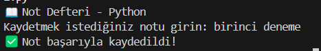

📖 Not Defteri Projesi
Kendi dijital günlüğünü oluştur! Notlarını kaydet, düzenle ve oku.

ğŸ› ï¸ Gereksinimler
- Python 3.x
- Dosya okuma & yazma (`open()`)
- Basit CLI (Komut Satırı Arayüzü)
💻 Örnek Kod
def kaydet_not(not_text):
with open("notlar.txt", "a") as file:
file.write(not_text + "\n")
print("✅ Not kaydedildi!")
🚀 Nasıl Yapılır?
- Python dosyanızı oluşturun.
- Bir fonksiyon ile notları dosyaya yazın.
- Kullanıcı girişleri ile not eklemeyi sağlayın.
- Dosyadan verileri okuyarak eklenen notları listeleyin.